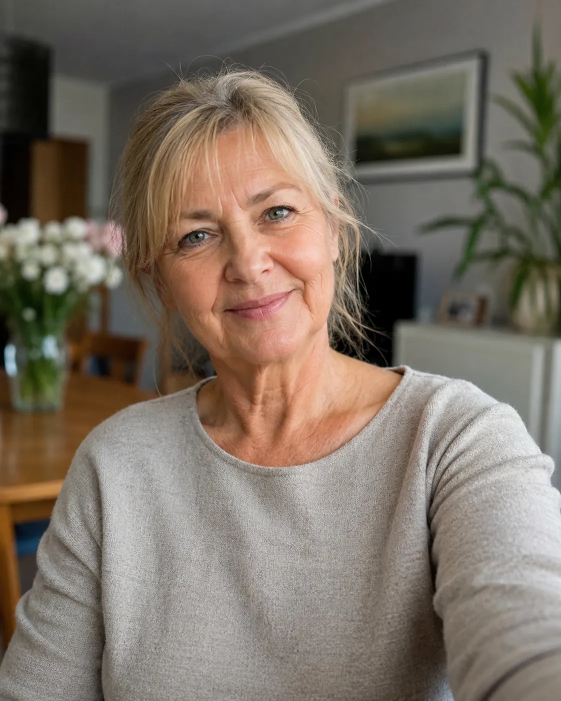
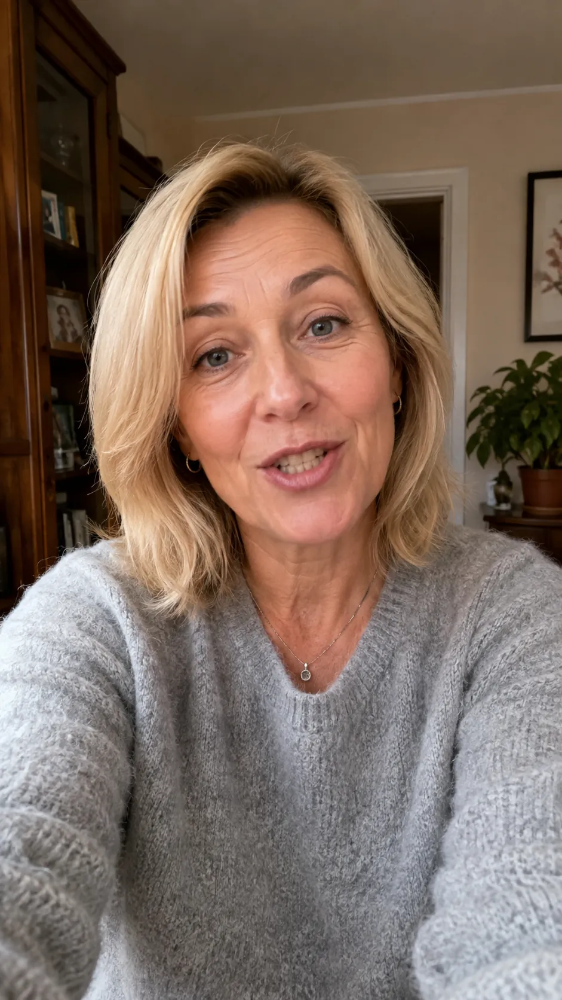
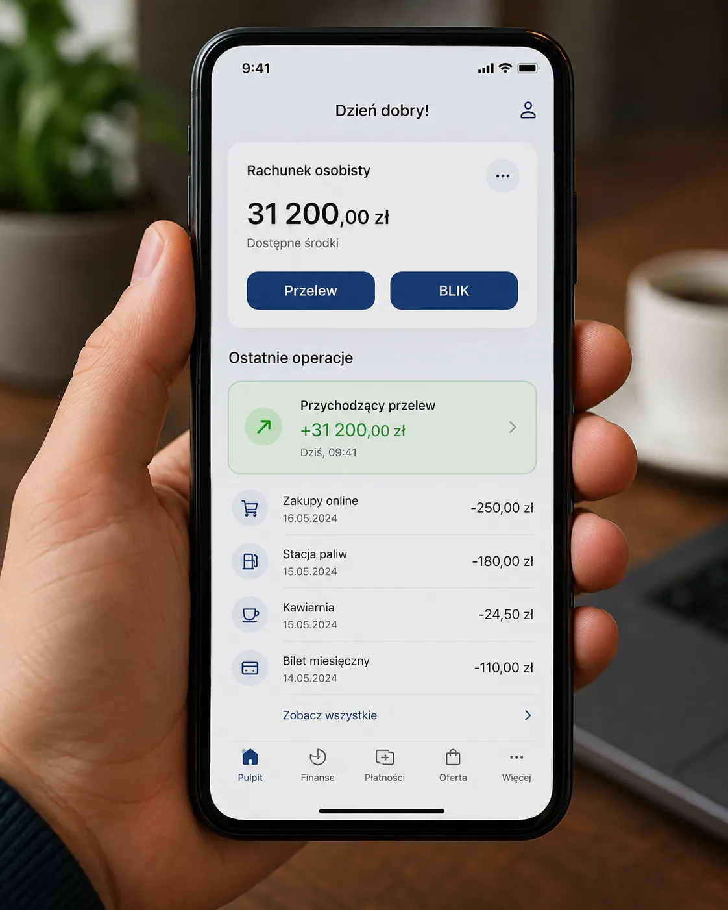

5/8Rozpoznaj profilćwiczenie z edukacji medialnej i fact-checkingu
Profil 5 z 8
Zadanie indywidualne
Przejrzyj profil i zdecyduj, z jakim typem konta masz do czynienia.
Przejrzyj całą historię konta. Zwróć uwagę na tematykę wpisów, źródła, relacje z innymi użytkownikami, sposób wywoływania emocji oraz możliwy cel działania. Nie oceniaj profilu wyłącznie na podstawie zgodności lub niezgodności z poglądami autora.
Katarzyna Gradowska
186 znajomych
DLKLMWMBAK
PostyInformacjeZnajomiZdjęciaWięcej
Posty
Katarzyna Gradowska28 sierpnia o 18:42 · ●
Dziękuję pani Dorocie za cudowną opinię ❤️ Zaczynała ostrożnie — od 800 zł. Po siedmiu dniach jej panel pokazał 9 460 zł. Najważniejsze są właściwe decyzje, konsekwencja i opieka osoby, która zna rynek.
Kryptowaluty naprawdę zmieniają życie. Napisz do mnie prywatnie słowo START, a wyjaśnię, jak działa program.
👍❤️ 9179 komentarzy · 20 udostępnień
👍 Lubię to!💬 Komentarz↗ Udostępnij
Dorota LisMogę potwierdzić, pani Kasia zawsze wszystko dokładnie tłumaczy 🙏
Marek WilkNajlepsza decyzja, jaką podjąłem w tym roku.
Dorota Lis15 maja o 10:06 · jest z: Katarzyna Gradowska · ●
🎥 świadectwo klientki
Na początku bardzo się bałam, bo wcześniej zostałam oszukana przez inną platformę. Minął rok odkąd polecono mi panią Katarzynę i dziś sama mogę pokazać swoją wypłatę. Wszystko działa, a pieniądze otrzymuję bez problemu. Dziękuję za cierpliwość i opiekę ❤️

▶
👍❤️ 5043 komentarze
👍 Lubię to!💬 Komentarz↗ Udostępnij
Katarzyna GradowskaJestem z Ciebie dumna. To dopiero początek naszej wspólnej drogi ✨
Karina Leśniak15 stycznia o 14:18 · jest z: Katarzyna Gradowska · ●
Dziękujemy naszej opiekunce konta, pani Katarzynie! ❤️ Jeszcze kilka miesięcy temu każdy rodzinny wyjazd odkładaliśmy „na później”. Bałam się, że to oszustwo, ale dziś pierwszy raz od dawna nie musimy liczyć każdej złotówki. Będę polecać ten program każdemu, kto chce zmienić życie swojej rodziny ✈️💐
👍❤️ 7076 komentarzy · 6 udostępnień
👍 Lubię to!💬 Komentarz↗ Udostępnij
Dorota LisGratulacje! U mnie też początkowo był strach, ale warto było zaufać.
Katarzyna GradowskaPiękna nagroda za odwagę i konsekwencję ❤️
Katarzyna Gradowska12 stycznia o 11:32 · ●
Kiedy ktoś pyta, czy te efekty są realne — wolę pokazywać historie moich podopiecznych niż się kłócić. Karina zaczynała małą kwotą, dziś spełnia marzenia swojej rodziny i nie musi już odkładać wszystkiego „na później”.
👍❤️ 6661 komentarzy · 8 udostępnień
👍 Lubię to!💬 Komentarz↗ Udostępnij
Karina Leśniak12 stycznia o 12:18 · jest z: Katarzyna Gradowska · ●
Nie wierzyłam, że uda nam się połączyć codzienne wydatki z planowaniem czegoś większego dla rodziny. Dziś wreszcie możemy pozwolić sobie na więcej i nie martwić się o każdy wyjazd. Dziękuję za wsparcie i cierpliwość ❤️
👍❤️ 5947 komentarzy · 5 udostępnień
👍 Lubię to!💬 Komentarz↗ Udostępnij
Dorota LisPiękna historia! U mnie też wszystko zaczęło się od małej wpłaty.
Katarzyna Gradowska24 grudnia o 08:05 · ●
ŚWIĄTECZNY BONUS DLA NOWYCH INWESTORÓW 🎄
Do końca dnia każdy nowy pakiet otrzyma dodatkowe 40% środków w panelu handlowym. W tym roku chcemy pomóc jeszcze większej liczbie rodzin zacząć budować niezależność finansową. Liczba miejsc jest ograniczona. Napisz wiadomość prywatną.
👍❤️ 7371 komentarzy
👍 Lubię to!💬 Komentarz↗ Udostępnij
Katarzyna Gradowska23 grudnia o 06:51 · czuje wdzięczność · ●
Boże, dziękuję za kolejny poranek, zdrowie mojej rodziny i wszystkich inwestorów. Dziękuję za siłę, dzięki której mogę pomagać innym wychodzić z długów i spełniać marzenia. Otaczaj opieką wszystkich, którzy mi zaufali. Amen 🙏
❤️🙏 8082 komentarze · 2 udostępnienia
👍 Lubię to!💬 Komentarz↗ Udostępnij
Marek Wilk13 listopada o 19:26 · jest z: Katarzyna Gradowska · ●
🎥 druga wypłata
To moja druga wypłata z platformy. Pani Katarzyno, dziękuję! Na początku wpłaciłem niewiele, żeby sprawdzić, czy to działa. Teraz mam pełne zaufanie. Przyjaciele, cieszcie się razem ze mną — to naprawdę niesamowite.
▶
👍❤️ 4895 komentarzy
👍 Lubię to!💬 Komentarz↗ Udostępnij
Katarzyna GradowskaGratulacje! Kolejny cel już czeka 📈

Elżbieta Maj8 października o 20:11 · jest z: Katarzyna Gradowska · ●
💬 polecenie klientki
Poleciła mi ją córka. Zaczęłam ostrożnie i dopiero po pierwszym wyniku uwierzyłam, że można wreszcie odetchnąć finansowo. Pani Katarzyna odpowiada cierpliwie na każde pytanie i nie zostawia człowieka samego. Polecam z całego serca.
👍❤️ 4539 komentarzy · 3 udostępnienia
👍 Lubię to!💬 Komentarz↗ Udostępnij
Katarzyna GradowskaDziękuję za zaufanie ❤️ To dla mnie wielka radość widzieć takie historie.
MB
Monika B.1 października o 12:03 · jest z: Katarzyna Gradowska · ●
Nie znałam się na bitcoinie, a dziś dzięki tej współpracy spłaciłam wszystkie zaległości. Tylko osoba z prawdziwym powołaniem może wykonywać taką pracę i zmieniać życie innych. Dziękuję za skuteczną wypłatę. Wkrótce inwestuję ponownie 🙌🙏
👍❤️ 5276 komentarzy · 4 udostępnienia
👍 Lubię to!💬 Komentarz↗ Udostępnij
AK
Adam Kowal22 września o 09:44 · jest z: Katarzyna Gradowska · ●
Właśnie dostałem drugą wypłatę 😳 Dziękuję za ogromny zwrot i profesjonalne prowadzenie. Pani Katarzyna pomaga ludziom na całym świecie. Mam nadzieję na kolejne udane transakcje.

👍❤️ 5874 komentarze · 10 udostępnień
👍 Lubię to!💬 Komentarz↗ Udostępnij
Dorota LisGratulacje! Tak właśnie zaczęła się moja historia.
Katarzyna Gradowska3 września o 07:24 · ●
Ostatnie 3 miejsca do wrześniowej grupy mentoringowej.
Nie potrzebujesz doświadczenia, tylko gotowości do działania i zaufania procesowi. Każdą osobę prowadzę krok po kroku. Jeśli chcesz zacząć małą kwotą i zobaczyć pierwszy wynik jeszcze w tym miesiącu, napisz do mnie prywatnie słowo START.
👍❤️ 6458 komentarzy · 7 udostępnień
👍 Lubię to!💬 Komentarz↗ Udostępnij
◷To wszystkie widoczne postyProfil prawie wyłącznie promuje inwestycje i historie sukcesu.
Omówienie po odpowiedzi
Katarzyna Gradowska to fikcyjne konto oszustwa inwestycyjnego.
Profil ma skłonić odbiorcę do uwierzenia, że szybki i niemal pewny zysk jest dostępny dzięki prywatnej opiece „ekspertki”. Gdy ofiara wpłaci pieniądze, fałszywa platforma może pokazywać rosnące saldo, ale wypłata staje się niemożliwa albo wymaga kolejnych rzekomych opłat.
01
Pożyczony wizerunek
Atrakcyjne, profesjonalne zdjęcie buduje uwagę i zaufanie. W tego typu oszustwach fotografie bywają skradzione prawdziwym osobom i przypisane fikcyjnym „traderom”.
02
Gwarantowane zyski
Profil pokazuje wielokrotne pomnożenie niewielkich kwot w kilka dni, bonusy i brak ryzyka. Legalna inwestycja nie może uczciwie gwarantować takich wyników.
03
Fałszywe świadectwa
Samochody, filmy klientów i zrzuty bankowe pochodzą z kont będących częścią tej samej sieci. Oszustwo potwierdza samo siebie.
04
Kontakt prywatny
Publiczne posty mają wzbudzić ciekawość, ale właściwa rozmowa odbywa się poza kontrolą społeczności — w wiadomościach prywatnych lub komunikatorze.
1. ZaufanieProfesjonalne zdjęcie, religijny język, opowieści o pomaganiu rodzinom.2. Mała wpłataOfiara ma zacząć od niewielkiej kwoty, aby „bezpiecznie sprawdzić” platformę.3. Fałszywy zyskPanel pokazuje gwałtownie rosnące saldo i zachęca do większych wpłat.4. Blokada wypłatyPojawia się dodatkowy „podatek”, opłata weryfikacyjna albo całkowity brak kontaktu.
Najważniejsza lekcja: komentarze i świadectwa innych użytkowników są wartościowe tylko wtedy, gdy potrafisz potwierdzić, że pochodzą od niezależnych, prawdziwych osób. W oszustwie inwestycyjnym cały tłum „zadowolonych klientów” może być jedną, skoordynowaną konstrukcją.
Co sprawdzić przed wpłatą pieniędzy?
Zweryfikuj pełną nazwę firmy, zezwolenia, domenę i dane kontaktowe. Sprawdź podmiot na Liście ostrzeżeń publicznych KNF. Pamiętaj, że brak nazwy na liście nie jest potwierdzeniem bezpieczeństwa. Podejrzaną stronę, wiadomość lub reklamę można zgłosić przez formularz CERT Polska.
Uwaga metodologiczna: Katarzyna Gradowska, wszystkie konta klientów, platforma „Portfel+”, zrzuty, kwoty i opisane transakcje są fikcyjne. Adaptacja jest inspirowana materiałem edukacyjnym o profilu Cynthia Gaston i nie stanowi oskarżenia wobec żadnej rzeczywistej osoby ani firmy.

Dorota LisMogę potwierdzić, pani Kasia zawsze wszystko dokładnie tłumaczy 🙏
Marek WilkNajlepsza decyzja, jaką podjąłem w tym roku.